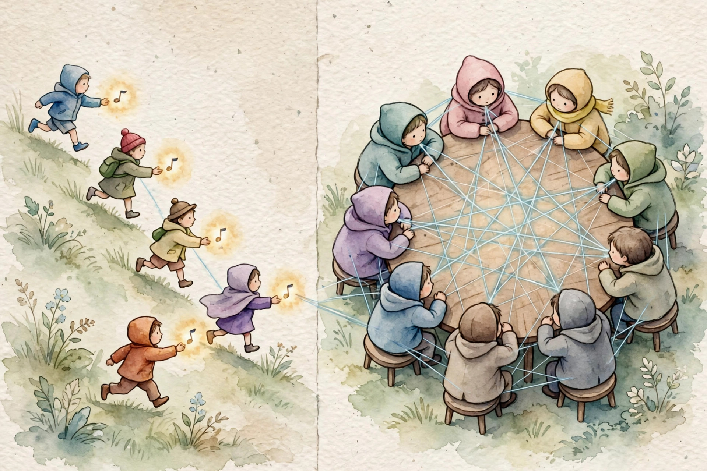
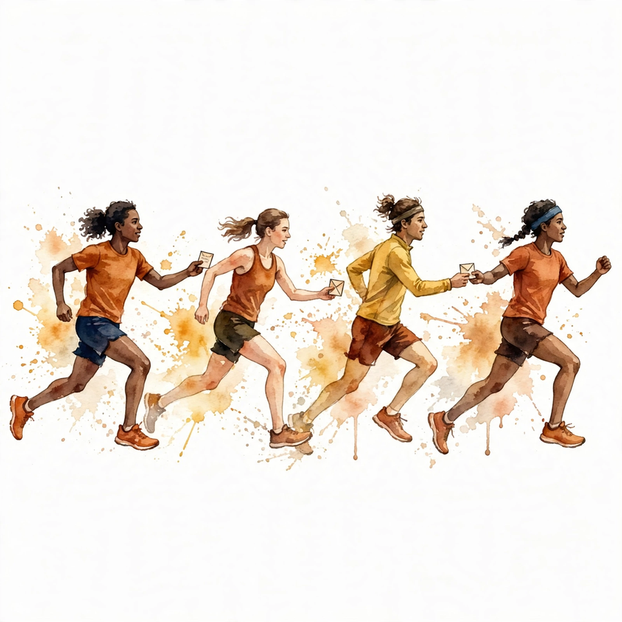
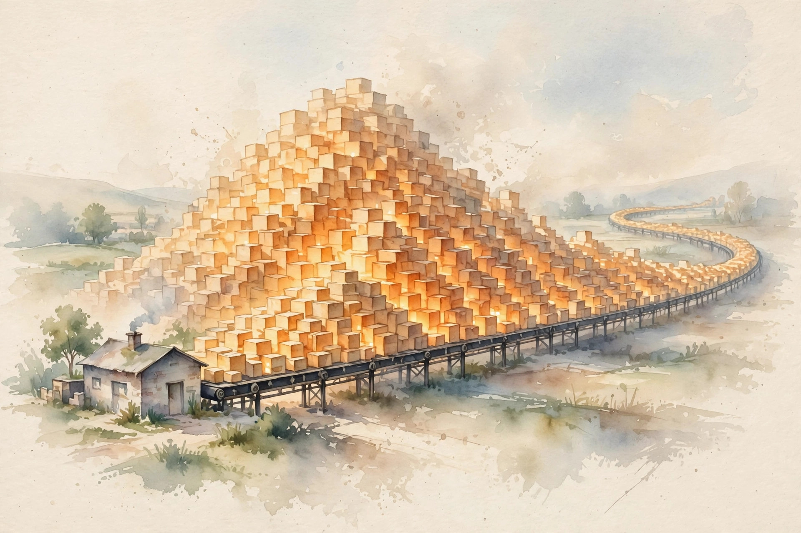
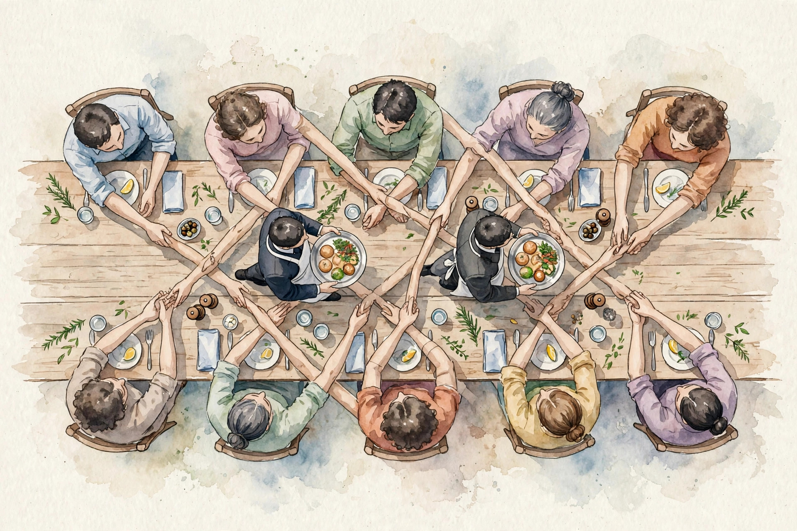

Unit 01 companion · narrated from the lesson document
Why recurrence lost, what a transformer step costs in FLOPs and bytes, and where every serving limit comes from. Twelve concepts, one arc: the workload of attention, from path length to the KV cache.
From the lesson The idea, and every number beside it, comes from the cited section of lesson-01-sequence-transformer-workload.md. The phrasing is the companion’s.
Illustration Invented by the companion: an analogy, a toy with made-up values, or a what-if. Never lecture content.
companion Companion voice: the idea above the tag is from the lesson. The generalization below it is the companion’s.
Provenance: no lecture transcript exists for this session. Calendar session titles anchor the lesson to Week 1, Sep 27 (Sequence Modeling, RNNs, Transformers, Pretraining and Fine-Tuning) and Week 2, Oct 04 (FLOP measurement, KV caching, autoregressive generation). This page narrates the lesson document, not a video. Claim class for every lesson leaf: PLANNED / SOURCE ATTRIBUTION PENDING. There is no official video, so no video embed appears.


From the lessonC01 §2, §3
Take an 8-token sentence where the model must link token 1 to token 8. How many sequential steps does each architecture demand? Picture a relay race for the RNN: each runner reads one token plus the note from the previous runner, and that note has to survive every handoff. Picture a meeting for the transformer: every token looks directly at every other token through attention scores, so token 8 reads token 1 in one hop.
From the lessonC01 §4, §6
The shapes make it concrete. The RNN state h has shape (n,) and updates as h_t = f(h_{t-1}, x_t), one shared function for all positions. The transformer works on the full matrix X of shape (T, n) and builds the score matrix A = softmax(QK^T / sqrt(d)) with shape (T, T). Path length: the RNN needs T − 1 sequential steps from token 1 to token T. Attention needs 1 step. But the work per layer is O(T²d), and all of it runs in parallel. The toy: T = 8, n = 4. The RNN takes 8 sequential steps and 7 handoffs. The transformer computes 8 × 8 = 64 scores in one parallel step.
From the lessonC01 §10
The assumption that attention always trains faster breaks at very long T: the T² memory term dominates and the transformer fails to fit in memory while the RNN still runs. The lesson’s counterexample: T = 100000, n = 64 on a small GPU. The score matrix needs 100000² × 2 bytes, far beyond memory. Every speed claim must state its T regime.
T (8, 64, 512), attention path stays 1. The lesson’s lab checks the same count.Illustration Path and work probe. Type a sequence length. The widget reports the C01 counts: RNN steps and handoffs, attention path, and naive attention scores with fp16 bytes.
From the lessonC02 §2, §3
Labeled data is scarce but raw text is abundant. How does the model learn from text with no labels? The label for each position is the next token. No human labels exist. The lesson frames pretraining as school: the model reads a vast library and predicts each next word, which forces it to absorb grammar, facts, and reasoning patterns. Fine-tuning is the job training that follows: a small labeled set steers the general graduate toward one task. School needs scale. The job phase needs care.
From the lessonC02 §4, §6
Next-token prediction on a corpus of D tokens gives D training examples for free: every position is one example. The toy corpus has 4 sentences of 8 tokens, so 32 tokens and 31 next-token examples (the last token of each sentence has no next token inside the toy). With a vocabulary of 16, a uniform model has loss log(16) = 2.77 nats. After pretraining, suppose mean loss drops to 1.20 nats. Perplexity falls from 16.0 to exp(1.20) = 3.32. One invariant survives every implementation: a uniform model has perplexity equal to vocabulary size.
From the lessonC02 §7, §9
Pretraining cost dominates: 6PD FLOPs for P parameters and D tokens (derived in C04). Fine-tuning costs a small fraction of pretraining, often under 1 percent, yet it decides task behavior. The risks run opposite: pretraining wastes compute when it fails, fine-tuning destroys general ability (catastrophic forgetting). Too large a learning rate or too many steps erases pretraining knowledge. The fix is a smaller rate and early stopping on a held-out set.
From the lessonC03 §2, §3
The model width is 8 and there are 2 heads. What shape is each head’s query matrix for a 4-token input? Picture h librarians working in parallel. Each one reads the same shelf of T books but asks a different question. The model width n splits evenly into h cards of size d = n / h.
From the lessonC03 §4, §5
Input X has shape (B, T, n). Per head, Q, K, V have shape (B, h, T, d) after reshape. Projections W_q, W_k, W_v, W_o are (n, n). Scores A have shape (B, h, T, T). The output is (B, T, n). The derivation: Q = X W_q reshapes to (B, T, h, d) and transposes to (B, h, T, d). Then QK^T contracts the d axis to give (B, h, T, T). Softmax runs over the last axis. Multiply by V, merge heads back to (B, T, n), apply W_o. One precondition: n divisible by h. Without it the head split has no meaning, and code must raise.
From the lessonC03 §6, §9
The toy: B = 1, T = 4, n = 8, h = 2, d = 4. Q has shape (1, 2, 4, 4). Scores A have shape (1, 2, 4, 4), 32 numbers. The output is (1, 4, 8). W_q has 8 × 8 = 64 parameters. Score cost: O(T²d) per head, O(T²n) total. The exercise asks for B = 2, h = 8, T = 1024: the score matrix holds 16,777,216 numbers, 33,554,432 bytes in fp16.
From the lessonC04 §2, §3
Training costs about 3x inference per token. Where does the factor of 3 come from? Treat the forward pass as following a recipe to produce a dish. Treat the backward pass as a health inspector walking the kitchen in reverse: at every station it needs the ingredients that were present (the activations) to assign blame to each step. The inspector visits each station twice: once to pass blame backward, once to blame the station’s own dials. That double visit explains the 2x inside the backward pass.
From the lessonC04 §4, §5
Forward costs 2P FLOPs per token: one multiply-add per parameter, counted as 2. Backward costs 4P: 2P to move gradients to activations, 2P to move them to weights. Training totals 6P per token. The derivation on a linear layer y = Wx with W of shape (8, 8): forward needs mn multiplies and mn adds, 128 FLOPs. Backward: gradient w.r.t. x is W^T dy, another 128. Gradient w.r.t. W is dy x^T, another 128. Total 384 FLOPs, which is 6 × 64.
From the lessonC04 §6, §9
Real scale: P = 7B, D = 1T tokens. Training FLOPs = 6 × 7e9 × 1e12 = 4.2e22. At 1e15 FLOP/s sustained, that is about 1.3 years on one device. The assumption that backward is always 2x forward breaks under checkpointing: the backward pass recomputes the forward, so the ratio rises toward 3x. State the recompute policy with any FLOP number.
6 × 7e9 × 1e12 = 4.2e22.From the lessonC05 §2, §3
A model card says 7B parameters. How is that number built from the architecture? Each layer has two rooms: attention with 4 square matrices of size n × n, and the MLP with two rectangles n × d_ff and d_ff × n. Add the embedding table V × n. Multiply rooms by layers.
From the lessonC05 §4, §5
Attention: 4n². MLP with d_ff = 4n: 8n². Per layer: 12n². Total: P = 12Ln² + Vn. Norms and biases stay negligible, so the estimate counts them as 0. The toy: n = 8, L = 2, V = 16. Per layer 12 × 64 = 768. Two layers: 1536. Embeddings: 16 × 8 = 128. Total: 1664 parameters. Real scale: n = 4096, L = 32, V = 32000. Per layer 12 × 4096² = 201,326,592. Times 32: 6,442,450,944. Embeddings: 32000 × 4096 = 131,072,000. Total about 6.57B. This is the number behind the 7B label on the model card.
From the lessonC05 §7, §9
Parameters set the memory floor: 2P bytes in fp16, 4P in fp32. They also set the per-token FLOP floor via the 6P rule. The assumption that 12n² always holds breaks on variants. SwiGLU MLPs use three matrices, MoE layers multiply by expert count, tied embeddings halve the embedding term. Quote the variant before the count. Use the formula to plan. Trust the code count on a built model.
12Ln² + Vn: toy 1,536 + 128 = 1,664. Real 6,442,450,944 + 131,072,000 ≈ 6.57B.From the lessonC06 §2, §3
The model fits in memory, but training runs out of memory. What else consumes memory? Think of parameters as the factory and activations as freight on a conveyor belt. Training stores every item at every station for the backward pass. Inference keeps only the current item. The belt, not the factory, causes most OOMs.
From the lessonC06 §4, §6
One layer input: BTn numbers, 2 bytes each in fp16. All L layers: 2BTnL bytes for the residual stream alone, plus attention internals. Attention scores add 2BhT² bytes per layer in the naive form. The MLP intermediate adds 2BTd_ff per layer. The toy (B = 2, T = 4, n = 8, L = 2, fp16): residual 256 bytes, MLP intermediate 1,024 bytes, scores 256 bytes across both layers. Real scale (B = 8, T = 2048, n = 4096, L = 32): residual exactly 4.0 GiB, MLP intermediate 16 GiB. Activations exceed parameters.
From the lessonC06 §7, §9
The assumption that fp16 halves all memory breaks on the optimizer. Master weights, optimizer states, and some activations stay in fp32. Adam keeps 8 bytes per parameter (m, v in fp32) plus the fp32 master copy. A 7B model needs about 14 GB for fp16 weights but over 80 GB with Adam states. Provision only after counting the optimizer.

From the lessonC07 §2, §3
Generation produces one token per step. What exactly is recomputed, and what is reused? Imagine writing with a perfect notebook. At each step you read the whole notebook (the KV cache) once, write one new line, and append that line’s notes to the notebook. You never re-read from scratch. The cost per step grows as the notebook thickens.
From the lessonC07 §4, §5
At step t the input is one new token of shape (B, 1, n). After t steps the KV cache holds (B, h, t, d) for keys and for values, in every layer. Without a cache, step t rebuilds keys and values for all t tokens: O(t) work per step, O(T²) across the run. With the cache, step t computes one new key and value and reads t cached pairs. The read is O(t) memory traffic with no recompute. Across T steps the traffic sums to O(T²) small-vector reads, while per-step compute stays O(n²).
From the lessonC07 §6, §9
The toy: prompt of 3 tokens, generate 2 more, n = 8, L = 1, h = 2, fp16. Cache after 5 tokens per layer: 80 numbers, 160 bytes. Real scale per step at T = 2048: cache read per layer 2 × 2048 × 4096 × 2 bytes = 33.5 MB, times 32 layers is about 1.07 GB of traffic per generated token. The assumption that the cache always helps breaks at huge batch sizes: the cache itself becomes the memory bottleneck and limits the batch. Batch 256 at T = 8192 needs about 1.1 TB of cache.
t cached pairs and appends one new pair.From the lessonC08 §2, §3
The same weights serve training and chat. Why do engineers treat them as different systems? Training is a factory run: full shifts, every machine at once, maximum throughput, cost counted in total FLOPs. Inference is a taxi service: one passenger at a time, latency matters, the meter runs on memory bandwidth. Same weights, different business.
| Aspect | Training | Inference (decode) |
|---|---|---|
| Parallelism | over B × T | over B only |
| FLOPs per token | 6P | 2P |
| Bound by | compute | memory bandwidth |
| Memory | activations O(BTL) | KV cache O(BTL), smaller constant |
| Objective | minimize loss | minimize latency |
From the lessonC08 §5, §6
Training sees B × T tokens at once, so each weight serves B × T uses: high arithmetic intensity, compute-bound. Decode touches each weight once per token, so intensity sits near 1 FLOP/byte for fp16 matvec, far below the ridge point: bandwidth-bound. The number: P = 7B, fp16, one A100-class device with 2 TB/s bandwidth (the lesson labels this a toy spec, not a vendor claim). Decode weight traffic per token: 14 GB. Time floor: 14 / 2000 = 0.007 s, about 143 tokens/s max. Training at B = 1024, T = 2048: 2M tokens per step, 6 × 7e9 × 2e6 = 8.4e16 FLOPs per step.
Illustration Decode floor calculator. It applies the C08 formula time = P × bytes / bandwidth. The bandwidth values are your inputs, not lesson claims.
Parameters (billions):
Bandwidth (TB/s):
From the lessonC09 §2, §3
At what sequence length does attention cost more than the MLP? Think of the MLP as a fixed toll per token, and attention as an all-to-all meeting: every token talks to every other token, so the price grows with the square of attendance. Short meetings are cheap. Long meetings dominate.
From the lessonC09 §4, §6
Forward, per layer per token: the MLP takes 16n² FLOPs (two matmuls at d_ff = 4n), the attention projections take 8n², and the attention scores take 4Tn. The layer total is 24n² + 4Tn per token. The crossover: 4Tn = 24n², so T = 6n. The toy (n = 8, d_ff = 32): at T = 4, MLP 1024, projections 512, scores 128. The two meet at T = 48, and scores take the lead from T = 49. Real scale (n = 4096): crossover T = 24576. At T = 2048: MLP per token 16 × 4096² = 2.68e8, scores 4 × 2048 × 4096 = 3.36e7. The MLP wins 8 to 1.
From the lessonC09 §7, §9
Below 6n tokens, the model is an MLP cost problem. Above, it is an attention cost problem. The assumption that attention is always the bottleneck breaks at ordinary lengths. At T = 2048, n = 4096, the MLP is 8x the attention scores. A profiler that only optimizes attention leaves 89 percent of FLOPs untouched. Profile first, then optimize the tall bar.
1536 flat versus 32T rising. They meet at T = 48 = 6n, exactly as the lesson computes.Illustration Crossover explorer. Move the slider to change the model width n. The widget applies the lesson’s T = 6n rule and shows the MLP-to-scores ratio at T = 2048.
From the lessonC10 §2, §3
The context window doubles from 4K to 8K. What exactly doubles, and what quadruples? Picture a dinner party: double the guests and the food doubles (the linear terms: MLP, KV cache), but the handshakes quadruple (the quadratic attention scores). The handshake term decides whether the room still fits.
From the lessonC10 §4, §6
Per sequence per layer the FLOPs are 24Tn² + 4T²n. Score memory is 2BhT² bytes in fp16 under naive attention. The KV cache is 4BTLn bytes in fp16, keys plus values. The toy (n = 8, h = 2, B = 1, L = 1, fp16): at T = 4, scores are 128 bytes. At T = 8, scores are 512 bytes, 4x. KV cache: 128 bytes at T = 4, 256 bytes at T = 8, 2x. Ratios are the invariant to check. Every attention variant owes its own ratios.
From the lessonC10 §7, §9
T² memory is the hard wall for naive attention. T² FLOPs is a soft wall (compute can be bought). The cache grows linearly, but its constant (4BLn) is large. The assumption that longer context is free at inference breaks on the cache. Double the context at fixed batch and cache bytes double, slowing every decode step. Budget cache bytes alongside weights.

T doubles from 4 to 8.From the lessonC11 §2, §3
Loss fell from 3.0 to 2.5. Did the model get better at the task you care about? Perplexity is the weigh-in: it measures certainty, not task skill. The downstream eval is the sparring session. Track both. Neither replaces the other.
From the lessonC11 §4, §6
A mean NLL of 2.5 nats means perplexity e^2.5 = 12.2. A mean NLL of 3.0 nats means e^3.0 = 20.1. The ratio is e^0.5 = 1.65: loss differences live on a log scale, so small drops are large certainty gains. The toy quiz has 4 questions. Model A scores loss 2.5 and quiz 3/4. Model B scores loss 2.7 and quiz 4/4. The lower loss did not win the quiz, so report both.
From the lessonC11 §7, §9
Perplexity monitors training health. Task accuracy supports capability claims. Human eval decides deployments. Never let perplexity alone decide a promotion. The assumption that lower loss means a better product breaks on contaminated evals: test text inside training data flatters the loss and proves nothing. Rule out contamination before you celebrate.
From the lessonC12 §2, §3
Your new attention variant trains 2x faster. The honest reply: faster than which baseline? A baseline is the sparring partner: the best simple method, tuned as well as yours, on the same task and budget. Beat a weak partner and you learn nothing.
From the lessonC12 §4, §6
Speedup = time(baseline) / time(method) at equal quality, or quality(method) − quality(baseline) at equal budget. Run the toy: naive attention at T = 64 takes 100 ms per step, the variant takes 50 ms at equal loss, which reads as 2x. Then run the tiled baseline (FlashAttention): 30 ms. The true speedup is 0.6x, a slowdown. The denominator flips the headline.
From the lessonC12 §7, §9
Strong baselines cost effort but prevent false wins. Spend a fifth of experiment time on the baseline. Published numbers give context. They never carry the headline claim. Re-run the baseline on your hardware for the claim. Common cheats: untuned baseline hyperparameters, a smaller baseline budget, an easier baseline task.
Illustration Speedup calculator. Enter ms per step for the naive baseline, the strong baseline, and your method. The widget reports both speedups, as the lesson demands.
Naive baseline (ms):
Strong baseline (ms):
Your method (ms):
From the lessonC01 to C12
The arc, end to end. Recurrence pays in sequential steps, attention pays in parallel work and memory, and the T regime decides which wins (C01). Text becomes training examples for free, and the cheap fine-tuning phase sets task behavior (C02). Attention splits, scores, and merges, with every shape written from n, h, d, T (C03). Training costs 6P per token: 2P forward, 4P backward (C04). Parameters count as 12Ln² + Vn, variant stated (C05). Activations dwarf weights: 4 GiB residual and 16 GiB MLP intermediate at real scale (C06). Decode reads the notebook and appends one line: O(P) FLOPs, O(T) traffic, bandwidth-bound (C07, C08). Below T = 6n the model is an MLP cost problem (C09). Doubling T quadruples scores and doubles the cache (C10). Perplexity is the weigh-in, the quiz is the sparring session (C11). And every claim meets the best simple baseline at equal budget (C12).
From the lessonUnit chapter plate
The unit chapter plate states the tradeoff in one line: “Memory buys parallelism, bandwidth bills every token.” The role bridge: the research engineer carries the 6P rule and the T = 6n crossover into any profiling session. The LLM engineer sizes every deployment with the KV cache formula. The research scientist runs the perplexity-versus-task honesty check on every quality claim. Where the unit points next: Unit 04 targets the above-crossover attention regime, and Unit 08 builds serving on the decode analysis.
Every lesson on this page, in order. Tap one to return to its chapter.